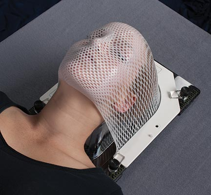
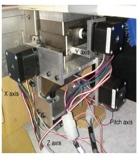
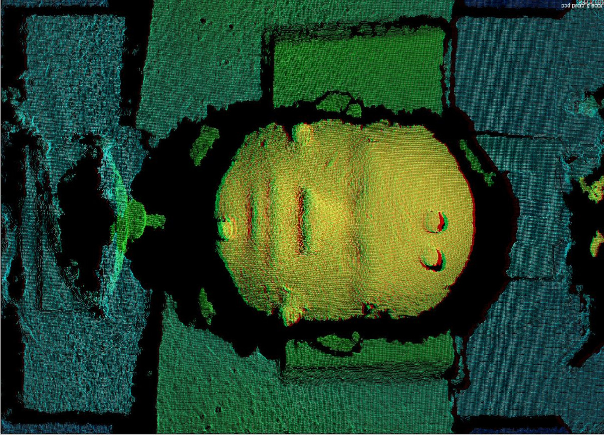
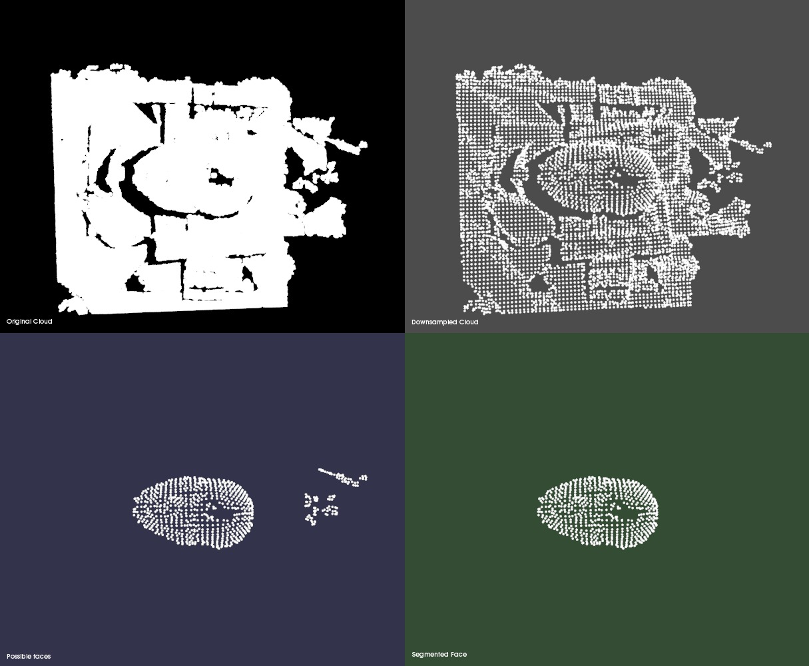
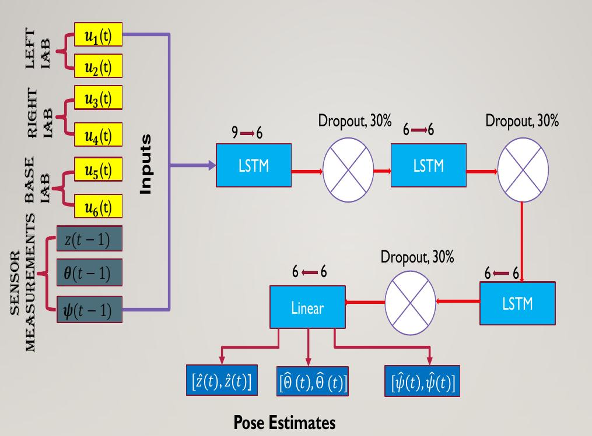
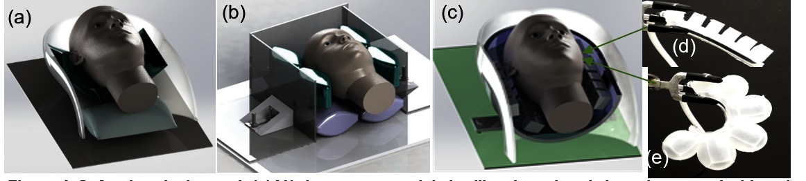

A 3-DoF Neuro-Adaptive Patient Pose Correcting System for Frameless and Maskless Cancer Radiotherapy
Towards Precise Patient Positioning during Head and Neck Cancer Radiotherapy
Olalekan Ogunmolu | 03.24.2017
Collaborators: A. Kulkarni,
Y. Tadesse,
X. Gu , S. Jiang, and
N. Gans
Department of Electrical Engineering, UT Dallas
Department of Mechanical Engineering, UT Dallas
Department of Radiation Oncology, UT SouthWestern
Background
Head and neck (H&N) cancers are among the most fatal of major cancers in the United States
2014: 35% of all pharynx and oral cavity cancers developed led to fatility [Siegal, R. et. al]
Cancer kills almost ~600,000 people each year in the U.S. alone.
Source: U.S. National Cancer Institute .
Radiation-based Treatment Procedures
Could be IMRT and/or IGRT
|
|
|
|
The case for accurate patient positioning
- Modern irradiation procedures allow dose errors of a few millimeters
- This informs computer calculation of highly precise radiation treatment plans on static planning images
- But static CT scans are unrealistic during real-time patient treatment
- How to minimize/eliminate intrafractional variations during treatment?
Setup and Session Errors
- Patient Positioning
- Precise positioning means use of rigid fixators for patient immobilization
- Downside: Patient comfort jeopardized; requires surface markings; assumes organs are rigid
- Internal Organ Mobility
- Perfect positioning of skeletal structures $\neq$ Organ immobility
- e.g. ventral displacement or geographic miss from moving organs
- Anatomic variations during treatment.
Limitations of existing solutions
- Frame-based immobilization systems are highly uncomfortable [Lutz, W. et. al, 1988], Takakura, T., et al., 2010]
- Involuntary patient movements is not a boon for inspection-based setups [Cervino, L.I. et. al., 2010, Li G. et al, 2015]
- Existing real-time correcting proposal employs stepper motors for head motion alignment[Li, X. et al, 2015]
-

-

Solution: Soft Position Correcting Systems
- Eliminate rigid frames and metallic rings used in immobilization that make patient uncomfortable ✔
- Eliminate attenuation of X-Ray beams ✔
- Remove need to constantly model nonlinear dynamics of patient's torso region and soft robotic actuators ✔
- Ensure control system is robust to (non)-parametric uncertainties ✔
Testbed

Vision-based Pose Estimation Steps
- Find edges of 2D planar regions in scene structure [Torr and Zisserman, 2000]
- $\rightarrow$ bound resulting plane indices with their 2D convex hull 
- Extract face and face-height neighbors into a predefined 2D prismatic model [Rusu, R. et. al, 2008]
- Cluster extracted points based on a Euclidean Clustering scheme defined in the paper
- Face will be the largest cluster
Segmentation Results
Control Design Objectives
- Stabilize system states
- Optimal closed loop tracking given a desired trajectory
- Robustify system to (non-)parametric uncertainties
- $\rightarrow$ changing head shapes, size and other anatomic/tumor variations
Model Reference Adaptive System (MRAS) Design
- Model head and bladder dynamics as
$\dot{\textbf{y}} = \textbf{A}\textbf{y} + \textbf{B} {\Lambda} \left(\textbf{u} - f(\textbf{x}) \right) + \textbf{w}(k) $ ,
where $f(\textbf{x})$ is a nonlinear function to be adapted for in our controller parameters
and $\textbf{x}$ is the tuple containing past controls and current outputs - Approximate $f(\textbf{x})$ by a neural network with continuous memory states
$\hat{f}\left(\textbf{u}(k-d), \textbf{y}(k),\textbf{w}(k)\right)$- $\rightarrow$ $\hat{f}(\cdot)$ is realized with a Long-Short Term Memory Cell [Horchreiter and Schmidhuber, 1991, 1997]
- Purpose: Remember good adaptation gains
- Set up control law in terms of parameter estimates from the neural network weights and Lipschitz basis functions, $\Phi(\textbf{y}) = \{\textbf{y}(k-d), \cdots, \textbf{y}(k-d-4), \textbf{u}(k-d) \cdots \textbf{u}(k-d-5)\}$
- $i.e.$ network looks back in time by 5 time steps at every instant, and then makes a prediction
- Derive Adaptive Adjustment mechanism from Lyapunov analysis [Parks, P., 1966]
Assumptions
- a dynamic RNN with $N$ neurons, $\varphi(\textbf{x})$, exists that will map from a compact input space $\textbf{u} \subset \mathbb{U}$ to an output space $\textbf{y} \subset \mathbb{Y}$ on the Lebesgue integrable functions with closed interval $[0, T]$ or open-ended interval $[0,\infty)$;
- the nonlinear function $f(\textbf{x})$ is exactly $\Theta^T \Phi(\textbf{x})$ with coefficients $\Theta \in R^{N\times m}$ and a Lipschitz-continuous vector of basis functions $\Phi(\textbf{x}) \in R^N$;
- inside a ball $\textbf{Y}_R$ of known, finite radius $R$, the ideal neural network (NN) approximation $f(\textbf{x}): R^n \rightarrow R^m$, is realized to a sufficient degree of accuracy, $\varepsilon_f > 0$;
- outside $\textbf{Y}_R$, the NN approximation error can be upper-bounded by a known unbounded, scalar function $\varepsilon_{max}(\textbf{x})$; $\|\varepsilon(\textbf{x})\| \le \varepsilon_{max}(\textbf{x}), \quad \, \forall \quad \textbf{x} \in \textbf{Y}_R$;
- there exists an exponentially stable reference model $\dot{\textbf{y}}_m = \textbf{A}_my_m + \textbf{B}_m \textbf{r}$
Controller Formulation
- $\textbf{u} = \underbrace{\hat{\textbf{K}}_y^{\textbf{T}}\textbf{y}}_{\text{state feedback}} + \underbrace{\hat{\textbf{K}}_r^{\textbf{T}} \textbf{r}}_{\text{optimal regulator}} + \underbrace{\hat{f}(\textbf{x})}_{\text{nonlinearity RNN approximator}}$
- $\hat{\textbf{K}}_y \, \text{ and } \hat{\textbf{K}}_r$ are adaptive gains to be suitably designed
- There are model matching conditions such that $\hat{\textbf{K}}_y = \textbf{K}_y , \, \text{ and } \hat{\textbf{K}}_r = \textbf{K}_r$ (ideally)
- Mathematically, we can imagine the approximator as $\hat{f}(\textbf{x}) = \hat{{\Theta}}^T {\Phi}(\textbf{x}) + \varepsilon_f(\textbf{x})$
- $\hat{\Theta}^T$ denotes the vectorized weights of the neural network and $\Phi(\textbf{x})$ denotes the vector of lagged inputs and output, $\varepsilon_f(\textbf{x})$ is the approximation error.
Recurrent Neural Network Model
Closed Loop Dynamics
- State closed loop dynamics is given by
$\dot{\textbf{y}} = \textbf{A} + \textbf{B} \Lambda (\hat{\textbf{K}}_{y}^{T} \textbf{y} + \textbf{B} \Lambda (\hat{\textbf{K}}_r^T \textbf{r} + \varepsilon_f))$-
where $\textbf{A}$ and $\Lambda$ are unknown matrices. The sign of $\Lambda$ is known. $\hat{\textbf{K}}_{y}^{T} \text{ and } \hat{\textbf{K}}_r^T$ are adaptation gains to be determined.
- The generalized error state vector $\textbf{e}(k) = \textbf{y}(k) -\textbf{y}_m(k)$, has dynamics
$\dot{\textbf{e}}(k)= \textbf{A}_m\textbf{e}(k) + \textbf{B} \Lambda[\tilde{\textbf{K}}_r^T \textbf{r} +\tilde{\textbf{K}}_y^T \textbf{y} - \varepsilon_f] $,- $\textbf{A}_m$ is Hurwitz and known, $\textbf{B}$ is known. $\textbf{y}_m$ is assumed to be a linear model-following model of the form, $\dot{\textbf{y}}_m = \textbf{A}_m \textbf{y}_m + \textbf{B} \, \textbf{r}$.
- $\textbf{Theorem:}$
Given correct choice of adaptive gains $\hat{\textbf{K}}_y$ and $\hat{\textbf{K}}_r$, the error state vector, $\textbf{e}(k)$ with closed loop time derivative $\dot{\textbf{e}}$, is uniformly ultimately bounded, and the state $\textbf{y}$ will converge to a neighborhood of $\textbf{r}$.- See proof in text ($\S V.A$).
Lyapunov Redesign
Stability Analysis
- Given the Lyapunov function
$\textbf{V}(\textbf{e}, \tilde{\textbf{K}}_y, \tilde{\textbf{K}}_r) = \textbf{e}^T\textbf{P}\textbf{e} + \textbf{tr}(\tilde{\textbf{K}}_y^T \Gamma_y ^{-1} \tilde{\textbf{K}}_y |\Lambda|) + \textbf{tr}(\tilde{\textbf{K}}_r^T \Gamma_r^{-1} \tilde{\textbf{K}}_r^T |\Lambda|)$,- where $\tilde{\textbf{K}}_y = \hat{\textbf{K}}_y - {\textbf{K}}_y$ and $\tilde{\textbf{K}}_r = \hat{\textbf{K}}_r - {\textbf{K}}_r$.
$\textbf{P}$ is a unique symmetric, positive definite (SPD) matrix solution of the algebraic Lyapunov equation, $\textbf{P}\textbf{A}_m + \textbf{A}_m^T\textbf{P} = -\textbf{Q}$
- where $\tilde{\textbf{K}}_y = \hat{\textbf{K}}_y - {\textbf{K}}_y$ and $\tilde{\textbf{K}}_r = \hat{\textbf{K}}_r - {\textbf{K}}_r$.
- We can verify that the adaptation laws are
$\dot{\hat{\textbf{K}}}_y = -\Gamma_y \textbf{y} \textbf{e}^T \textbf{P} \, \textbf{B} \text{sgn}(\Lambda) \text{ and } \dot{\hat{\textbf{K}}}_r = -\Gamma_r \textbf{r} \textbf{e}^T \textbf{P} \, \textbf{B} \, \text{sgn}(\Lambda)$.- where $\Gamma_y$ and $\Gamma_r$ are fixed SPD matrices of adaptation rates. $\textbf{tr}(\textbf{A})$ denote the trace of matrix $\textbf{A}$.
- We show in the paper that the time-derivative of the Lyapunov function is negative definite outside of the compact set
$\chi =\left(\textbf{e}: \|\textbf{e}\| \le \frac{2\|\textbf{PB}\|\lambda_{high}(\Lambda)\varepsilon_{max}(\textbf{y})}{\lambda_{low}(\textbf{Q})}\right).$ - Thus, the error $\textbf{e}$ is uniformly ultimately bounded.
- $i.e.$ $\textbf{y}(t) \rightarrow 0$ as $t \rightarrow \infty$ is sufficient for us.
Results
Future/Ongoing Work
- Add a differentiable optimization layer before neural network output layer to account for valve saturation in the end-to-end trianing algorithm
- Test on varied head shapes, sizes and volunteer trials
- Decouple control laws along individual axes of actuation
Stages of Integration
-

- A commercial pillow tested on a mannequin testbed to study controllability along a 1-DoF motion [arXiv:1506.04787, arXiv:1610.01481].
- We then developed and integrated a customized adjustable frame with air pillows to dynamically compensate motions [arXiv:1703.03821]
- Next phase: A wearable head helmet consisting of compliant soft actuating robots with morphological computational properties to actuate along peripheral axes of motion
- ArXiv Paper ID: 1703.03821v1
- Presentation citations are fully listed in the paper